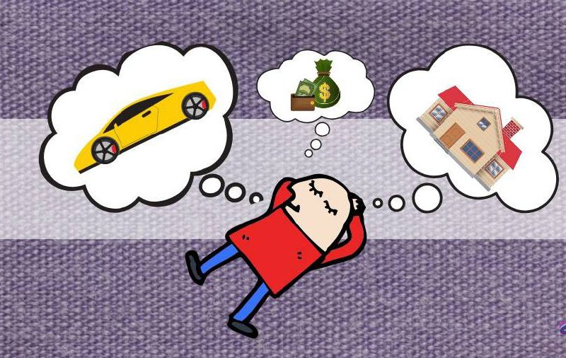

Агар инсон озишни истаса, табиат унга бунинг учун вақт, онглилик ва ҳаракат зарурлигини…

Агар инсон озишни истаса, табиат унга бунинг учун вақт, онглилик ва ҳаракат зарурлигини билдиради. Бироқ, у буни тезда, имкон қадар ҳозироқ амалга оширмоқчи бўлса, замонавий цивилизация унга пластик жарроҳлик ва липосактсияни таклиф қилади. Ҳеч ким инсонга бу пайтда у бир лаҳзали истаги учун ширинлик хоҳлайдиган ва оқибатларини ўйламайдиган уч ёшли болага ўхшаб қолаётганини айтмайди.
Агар инсон онгини кенгайтирмоқчи бўлса, амалиётчилар бунинг учун кўплаб йўлларни таклиф этади. Тафаккур, мушоҳада ва ўзликни англаш шулар жумласидандир. Аммо агар киши буни тезда, айнан ҳозир қилмоқчи бўлса, замонавий фармакология бунинг учун кўплаб кимёвий воситаларни таклиф этади. Ҳеч ким бу онгнинг кенгайиши ўз кучи билан эришилмагани, аввал юқорига кўтариб, кейин эса жуда чуқур тушириб юборишини айтмайди. Ҳеч ким бундай рағбатлантириш беришдан кўра кўпроқ олишини таъкидламайди.
Агар одам бирор жойга тезда бормоқчи бўлса, биология тўлиқ мослашиш уч ҳафта давом этишини кўрсатади.
Аммо замонавий фан автомобиль, поезд ва самолётни таклиф қилади. Иш берувчилар эса икки ҳафталик таътил беришади. Бу эса жисмоний жиҳатдан қаергадир етиб бориш мумкинлигини, лекин у ерда тўлиқ мавжудликни ҳис қилишга улгурилмаслигини англатади, чунки бунга вақт етишмайди.
Агар инсон яқин муносабатларни хоҳласа, психология бир-бирини билиш учун дастлабки мулоқот ва вақт муҳимлигини уқтиради. Кўп меҳнат керак бўлади. Ҳақиқий яқинлик юзага келиши учун аста-секин шаклланадиган самимийлик ва ҳурмат зарур. Аммо замонавий маданият самимийлик ва ҳимоясиз ижтимоий тармоқларни таклиф қилади, бу ерда алоҳида шахс қадрини йўқотади. Тез мулоқот ва мажбуриятсиз муносабатлар ҳам шулар жумласидан. Лекин ҳеч ким булар фақат вақтинчалик қониқиш бериши мумкинлиги, бахт келтирмаслиги ҳақида огоҳлантирмайди.
Ҳар қандай тез ҳаракатнинг ўз оқибати бор. Тез углеводлар, тез стимуляторлар, тез танишувлар ва тез ўзгаришларнинг ҳам. Улар тез натижа бериши мумкин, лекин беришдан кўра кўпроқ олади.
Ҳақиқий бахт кичик, шошилмай қўйилган қадамлар билан келади, миқдорни сифатга айлантиради. Бир лаҳзада ўз орзунгизда яшаётганингизни пайқаб қоласиз.
Масъулиятни ўз зиммангизга олинг ёки назоратни қўйиб юборинг. Англанг ёки аксинча, ўйлашни тўхтатинг. Яшанг ва ҳис қилинг. Ўз қулайлик ҳудудингиздан ташқарига чиқинг. Шунда бу сизники, хаққоний ва аниқ бўлади. Ўшанда бахтингиз номаълум сабабларга кўра йўқолишидан қўрқмайсиз, чунки унинг ҳар бир босқичини биласиз.
Бир зумда эришилган ютуқни ушлаб қолиш мушкул!
Аста секинликда бахт чинакам бўлади.